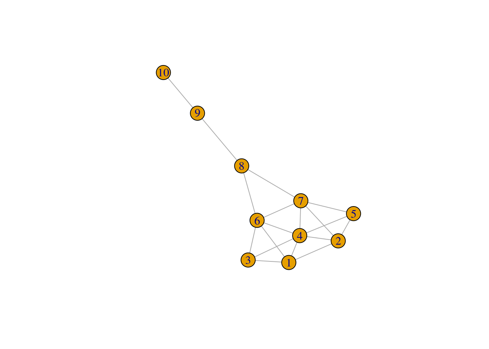
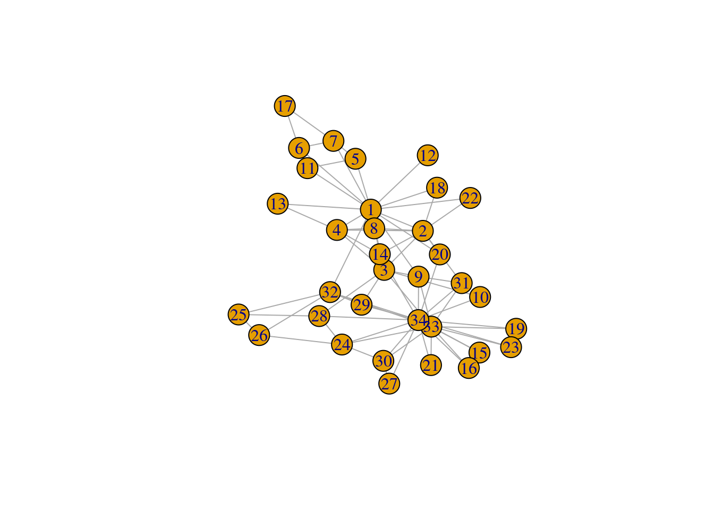
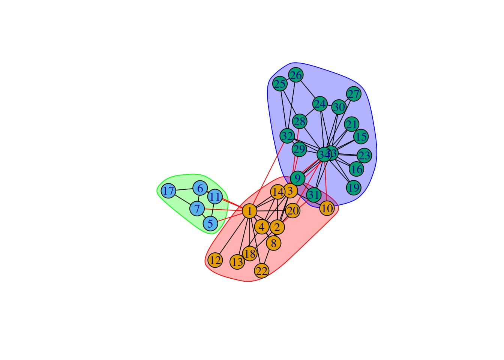

set.seed(123) # for reproducibility
# Load required packages
library(here)
library(tidyverse)
library(igraph)
library(igraphdata)2 Network statistics
In this lesson, you will learn to perform descriptive analyses of networks, including calculation of network statistics, and community detection. At the end of this lesson, you will be able to:
- understand and calculate the main network-, node-, and edge-level statistics;
- identify communities (or clusters) in networks using different algorithms;
- assess network cohesion.
Let’s start by loading the packages we will use.
2.1 Node-level statistics
In a graph, some nodes are thought to be more important than others. However, “important” is a quite subjective term, so we need formal ways of measuring how central a node is in a network. These metrics are often referred to as centrality measures. There are many of such metrics, but some of the most commonly used are:
Degree: number of connections of a node N. In weighted graphs, this is usually measured as the sum of weights of the edges containing node N. In directed graphs, we often distinguish between in-degree (number of ingoing edges) and out-degree (number of outgoing edges).
Closeness: the average length of the shortest path between a node N and all other nodes in the graph.
Betweenness: the number of shortest paths going through a node, which quantifies the number of times a node acts as a bridge along the shortest path between two other nodes.
Eigenvector centrality: first eigenvector of the graph’s adjacency matrix.
Harmonic centrality: the mean inverse distance of a node N to all other nodes.
To demonstrate how to calculate these node statistics, consider the following graph:
g <- make_graph("Krackhardt kite")
plot(g)
Let’s calculate different centrality measures:
# Degree
c1 <- degree(g)
# Closeness
c2 <- closeness(g)
# Betweenness
c3 <- betweenness(g)
# Eigenvector centrality
c4 <- eigen_centrality(g)$vector
# Harmonic centrality
c5 <- harmonic_centrality(g)
# Show all measures
centrality_summary <- data.frame(
node = as.character(V(g)),
degree = c1,
closeness = c2,
betweenness = c3,
eigenvector = c4,
harmonic = c5
)
centrality_summary node degree closeness betweenness eigenvector harmonic
1 1 4 0.05882353 0.8333333 0.73221232 6.083333
2 2 4 0.05882353 0.8333333 0.73221232 6.083333
3 3 3 0.05555556 0.0000000 0.59422577 5.583333
4 4 6 0.06666667 3.6666667 1.00000000 7.083333
5 5 3 0.05555556 0.0000000 0.59422577 5.583333
6 6 5 0.07142857 8.3333333 0.82676381 6.833333
7 7 5 0.07142857 8.3333333 0.82676381 6.833333
8 8 3 0.06666667 14.0000000 0.40717690 6.000000
9 9 2 0.04761905 8.0000000 0.09994054 4.666667
10 10 1 0.03448276 0.0000000 0.02320742 3.416667Note how the “most important” node in the graph changes depending on the centrality measure used. This example nicely illustrates the importance of using different centrality measures to assess a node’s importance in a graph.
Practice
Use the code below to load an igraph object containing character relationships in the TV show “Game of Thrones”. Then, answer the questions below using this graph.
# Load Game of Thrones network
got <- readRDS(here("data", "got.rds"))Calculate the degree, closeness, betweenness, eigenvector, and harmonic centralities of all nodes in this network. Which character is the most central based on each of these measures?
In network science, people often want to find hubs, which are the most highly connected nodes in a graph. Here, we will define as hubs the top 10% most highly connected nodes. Based on this definition, identify hubs in the
gotnetwork.
2.2 Edge-level statistics
In network science, researchers usually can answer their questions by exploring node statistics. However, some questions can only be answered by analyzing edge statistics. For example, one might be interested in knowing which connections are more important for the flow of information (in social networks) or a molecular signal (in molecular networks).
The most common edge-level statistic is the edge betweenness, which is an extension of node betweenness describing the number of shortest paths traversing an edge E. Let’s calculate edge betweenness for all egdes in the graph we created before.
# Calculate edge betweenness
edge_betweenness(g) [1] 2.666667 1.500000 1.833333 4.666667 1.833333 1.500000 4.666667
[8] 3.000000 4.500000 3.000000 3.333333 3.333333 4.500000 2.666667
[15] 10.500000 10.500000 16.000000 9.000000If you want to extract edges that have the highest betweenness, you’d do the following:
# Extract edges with the highest betweenness centrality
eb <- edge_betweenness(g)
as_edgelist(g)[which.max(eb), ][1] 8 9While the betweenness centrality can be extended to edges, other node centrality measures do not. One way to circumvent this is to create a line graph of a graph G, and then calculate centrality measures for the nodes of the line graph. A line graph of G, G’ = (V’, E’), is obtained by changing the nodes of a graph to edges, and edges to nodes. You can do that with igraph using the function make_line_graph().
# Obtaining the line graph G' of a graph G
lg <- make_line_graph(g)
lgIGRAPH 3c8919f U--- 18 57 -- Line graph
+ attr: name (g/c)
+ edges from 3c8919f:
[1] 1-- 2 1-- 3 2-- 3 1-- 4 2-- 4 3-- 4 3-- 5 1-- 5 1-- 6 5-- 6
[11] 1-- 7 5-- 7 6-- 7 3-- 8 5-- 8 2-- 8 4-- 9 2-- 9 8-- 9 6--10
[21] 3--10 5--10 8--10 4--11 9--11 3--11 5--11 8--11 10--11 7--12
[31] 3--12 5--12 8--12 10--12 11--12 7--13 12--13 6--13 10--13 7--14
[41] 12--14 13--14 4--14 9--14 11--14 4--15 9--15 11--15 14--15 15--16
[51] 7--16 12--16 13--16 14--16 15--17 16--17 17--18Once you have the line graph of a graph G, you can calculate node centrality measures as described in the previous section (e.g., degree, closeness, etc.). Since nodes and edges have been swapped, node statistics of a line graph actually describe edge statistics of the original graph.
Practice
Using the Game of Thrones graph from the previous practice problems, answer the questions below:
Which edges have the highest betweenness?
Create the line graph of this graph and calculate the degree, betweenness, and closeness of the line graph. Are the nodes with the highest values for each of these measures the same?
2.3 Assessing network cohesion
Network cohesion refers to the extent to which subsets of nodes are cohesive with respect to the relation defining edges in the graph. In molecular biology, for example, assessing network cohesion can reveal what proteins seem to work closely together in a cell; in social networks, one can investigate whether friends of person A tend to be friends of person B as well. There are many ways of assessing network cohesion, and we will explore the most common ones in the sections below.
2.3.1 Subgraphs and censuses
A popular way of defining network cohesion consists in analyzing frequencies of particular types of subgraphs. One of the most remarkable subgraphs is the clique, which are complete subgraphs (all nodes are connected by edges). Using the karate club network, let’s count the frequency of cliques of each size.
Cliques and maximal cliques
# Create karate club graph
g <- make_graph("Zachary")
# Count frequency of cliques of each size
table(lengths(cliques(g)))
1 2 3 4 5
34 78 45 11 2 Cliques of size 1 and 2 indicate nodes and edges, respectively, so they are are usually ignored when assessing network cohesion. Ignoring those, the table above shows that most of the cliques (N = 45) are triangles (size three), and the maximum clique size is 5.
However, note that larger cliques can include smaller cliques, leading to some sort of redundancy. Because of that, it is often interesting to identify maximal cliques, which are defined as cliques that are not a subset of a larger clique. Let’s now count the frequency of maximal cliques.
# Count the frequency of maximal cliques of each size
table(lengths(max_cliques(g)))
2 3 4 5
11 21 2 2 Besides cliques, other important types of subgraphs include dyads (pairs of nodes) and triads (triples of nodes), especially in directed graphs. In directed graphs, dyads can take on three possible states: null (no directed edge), assymetric (one directed edge), or mutual (two directed edges). Likewise, triads can take on 16 possible states.
To perform a census of the possible states of dyads and triads, you can use the functions dyad_census() and triad_census(), respectively. Let’s demonstrate it with the enron email network (emails generated by 500k employees of the Enron Corporation).
# Load data set
data(enron)
# Get dyad census (frequency of dyad states)
dyad_census(enron)$mut
[1] 913
$asym
[1] 1184
$null
[1] 14739In this data set, we can see that, among non-null states, most dyads are assymetric.
Finally, motifs are another commonly studied type of subgraph, especially in biological networks, and they are defined as small connected subgraphs that appear more often than the expected by chance. Below is an example of how to count motifs of size 3.
# Get frequecy of motifs of size 3
motifs(g, size = 3)[1] NA NA 393 45The order of the motifs is defined by their isomorphism class (see ?isomophism_class for details). Note that unconnected subgraphs are not considered to be motifs, so their frequencies will be result in NA.
2.3.2 Relative frequency-based measures
A common measure of network cohesion is the density of a graph, which describes the frequency of existing edges relative to the potential number of edges. This is a number that ranges between 0 and 1, and it can be estimated with the function edge_density(). Let’s demonstrate it by calculating the density of the entire graph for the karate club network, and for a subgraph containing only one of the instructors and its first-order neighbors
# Calculate density of the entire graph
edge_density(g)[1] 0.1390374# Calculate density of subgraph containing instructor (node 24) and neighbors
sg <- induced_subgraph(g, neighborhood(g, 1, 34)[[1]])
edge_density(sg)[1] 0.2091503A somewhat similar measure is the clustering coefficient, which describes the number of connected triples that close to form triangles. This measure is also referred to as transitivity, which is why the igraph function to calculate it is called transitivity(). To calculate the clustering coefficient of the entire graph, you’d do as follows:
# Calculate clustering coefficient of the graph
transitivity(g)[1] 0.2556818Finally, another measure that only applies to directed graphs is the reciprocity of a graph, which defines the number of dyads with reciprocated (i.e., mutual) directed egdes divided by the number of dyads with a single, unreciprocated edge. Let’s calculate the reciprocity of the enron network.
# Calculate reciprocity of the `enron` network
reciprocity(g)[1] 12.3.3 Connectivity and cuts
Researchers usually want to find out whether a graph separates into distinct subgraphs. In this context, a graph is said to be connected if every node is reachable from every other. To find out if a graph is connected, you can use the function is_connected(). Let’s demonstrate it in a network of protein-protein interactions in yeast (N = 2617 nodes).
# Load yeast protein-protein interaction network
data(yeast)
# Check if the network is connected
is_connected(yeast)[1] FALSEThe fact that the network is not connected means that this large graph is broken into components. In such graphs, it often happens that one of these components is much larger than all the others, and this is called the giant component. To investigate if the yeast network contains a giant component, let’s decompose this graph into different components and count the number of nodes per component.
# Decompose the graph and count number of nodes in each component
comps <- decompose(yeast)
table(lengths(comps))
2 3 4 5 6 7 2375
63 13 5 6 1 3 1 We can see that there’s a single component with 2735 nodes (~90% of the total number of nodes), while other components have very few nodes. When this is the case, it is common practice to restrict further analyses to the giant component only, as the other smaller components are not very informative. Let’s extract the giant component.
# Extract giant component
yeast_gc <- decompose(yeast)[[1]]Giant components usually display a remarkable characteristic termed small world property, which means that the average shortest-path distance is small, but clustering coefficient is high. Let’s check if this is the case here:
# Get average path length and diameter
mean_distance(yeast_gc)[1] 5.09597diameter(yeast_gc)[1] 15# Get clustering coefficient
transitivity(yeast_gc)[1] 0.4686663Indeed, this giant component has a small average shortest-path distance, and relatively high clustering coefficient.
In a graph, there are usually some nodes that, if removed, can disconnect the graph. These are called articulation points or cut nodes, and they typically indicate parts of a network that are vulnerable to attacks. You can identify them with the function articulation_points() as below:
# Get articulation points
ap <- articulation_points(yeast_gc)
length(ap)[1] 350In the giant component of the yeast network, 350 nodes are articulation points.
Practice
Using the Game of Thrones graph from the previous practice problems, answer the questions below.
How many cliques of each size are there? What is the size of the largest clique?
How many maximal cliques of each size are there? What is the size of the largest maximal clique?
What is the network’s density and clustering coefficient?
If this network connected?
What is the network’s average shortest-path distance and diameter?
How many articulation points are there? What percentage of the total number of nodes does that represent?
2.4 Community detection
Identifying communities or clusters in a graph is one of the most common analyses in network science. This is a way of identifying subgraphs containing more closely-related nodes, and it has many implications in different fields. In biology, for instance, this can be used to identify genes or proteins involved in the same biological process; in social network science, this can reveal individuals that share traits and/or interests.
In igraph, you can identify communities using a family of functions named cluster_*(), and each function detects communities using a different algorithm. The Infomap algorithm is arguably one of the most popular of them, and it’s available in the function cluster_infomap(). Let’s demonstrate it.
# Create graph
g <- make_graph("Zachary")
plot(g)
# Detect communities with Infomap
cl <- cluster_infomap(g)
clIGRAPH clustering infomap, groups: 3, mod: 0.4
+ groups:
$`1`
[1] 1 2 3 4 8 10 12 13 14 18 20 22
$`2`
[1] 5 6 7 11 17
$`3`
[1] 9 15 16 19 21 23 24 25 26 27 28 29 30 31 32 33 34
In the output of cluster_infomap(), we can observe that the Infomap algorithm identified 3 clusters, whose members are described below each cluster ID. You can also extract cluster membership for each node with the functions membership() and communities(), which return a vector or membership and a list, respectively.
# Vector of cluster membership for each node
membership(cl) [1] 1 1 1 1 2 2 2 1 3 1 2 1 1 1 3 3 2 1 3 1 3 1 3 3 3 3 3 3 3 3 3 3 3 3# List of nodes that belong to each cluster
communities(cl)$`1`
[1] 1 2 3 4 8 10 12 13 14 18 20 22
$`2`
[1] 5 6 7 11 17
$`3`
[1] 9 15 16 19 21 23 24 25 26 27 28 29 30 31 32 33 34The generic plot() function can also be used to quickly visualize the graph with clusters highlighted.
# Visualize graph with communities highlighted
plot(cl, g)
If you have communities detected with different algorithms, you can use the function compare() to calculate the distance between two community structures. To demonstrate, let’s detect communities using another very popular algorithm named Louvain.
# Detect community with Louvain
cl2 <- cluster_louvain(g)
# Compare community structures
compare(cl, cl2)[1] 0.2727973The function compare() can calculate distances between community structures using different methods. For more details on all methods, see the function’s help page (with ?compare).
Practice
Using the Game of Thrones graph from the previous practice problems, identify communities using the Infomap, Louvain, Leiden, and label propagation algorithms. Then, answer the questions below.
How many clusters were detected by each algorithm?
Calculate the distance between the community structures detected with Infomap and all other methods. What do you conclude based on the results?
Session information
This chapter was created under the following conditions:
─ Session info ───────────────────────────────────────────────────────────────
setting value
version R version 4.3.2 (2023-10-31)
os Ubuntu 22.04.3 LTS
system x86_64, linux-gnu
ui X11
language (EN)
collate en_US.UTF-8
ctype en_US.UTF-8
tz Europe/Brussels
date 2024-04-19
pandoc 3.1.1 @ /usr/lib/rstudio/resources/app/bin/quarto/bin/tools/ (via rmarkdown)
─ Packages ───────────────────────────────────────────────────────────────────
package * version date (UTC) lib source
cli 3.6.2 2023-12-11 [1] CRAN (R 4.3.2)
colorspace 2.1-0 2023-01-23 [1] CRAN (R 4.3.2)
digest 0.6.34 2024-01-11 [1] CRAN (R 4.3.2)
dplyr * 1.1.4 2023-11-17 [1] CRAN (R 4.3.2)
evaluate 0.23 2023-11-01 [1] CRAN (R 4.3.2)
fansi 1.0.6 2023-12-08 [1] CRAN (R 4.3.2)
fastmap 1.1.1 2023-02-24 [1] CRAN (R 4.3.2)
forcats * 1.0.0 2023-01-29 [1] CRAN (R 4.3.2)
generics 0.1.3 2022-07-05 [1] CRAN (R 4.3.2)
ggplot2 * 3.5.0 2024-02-23 [1] CRAN (R 4.3.2)
glue 1.7.0 2024-01-09 [1] CRAN (R 4.3.2)
gtable 0.3.4 2023-08-21 [1] CRAN (R 4.3.2)
here * 1.0.1 2020-12-13 [1] CRAN (R 4.3.2)
hms 1.1.3 2023-03-21 [1] CRAN (R 4.3.2)
htmltools 0.5.7 2023-11-03 [1] CRAN (R 4.3.2)
htmlwidgets 1.6.4 2023-12-06 [1] CRAN (R 4.3.2)
igraph * 2.0.1.1 2024-01-30 [1] CRAN (R 4.3.2)
igraphdata * 1.0.1 2015-07-13 [1] CRAN (R 4.3.2)
jsonlite 1.8.8 2023-12-04 [1] CRAN (R 4.3.2)
knitr 1.45 2023-10-30 [1] CRAN (R 4.3.2)
lifecycle 1.0.4 2023-11-07 [1] CRAN (R 4.3.2)
lubridate * 1.9.3 2023-09-27 [1] CRAN (R 4.3.2)
magrittr 2.0.3 2022-03-30 [1] CRAN (R 4.3.2)
munsell 0.5.0 2018-06-12 [1] CRAN (R 4.3.2)
pillar 1.9.0 2023-03-22 [1] CRAN (R 4.3.2)
pkgconfig 2.0.3 2019-09-22 [1] CRAN (R 4.3.2)
purrr * 1.0.2 2023-08-10 [1] CRAN (R 4.3.2)
R6 2.5.1 2021-08-19 [1] CRAN (R 4.3.2)
readr * 2.1.5 2024-01-10 [1] CRAN (R 4.3.2)
rlang 1.1.3 2024-01-10 [1] CRAN (R 4.3.2)
rmarkdown 2.25 2023-09-18 [1] CRAN (R 4.3.2)
rprojroot 2.0.4 2023-11-05 [1] CRAN (R 4.3.2)
rstudioapi 0.15.0 2023-07-07 [1] CRAN (R 4.3.2)
scales 1.3.0 2023-11-28 [1] CRAN (R 4.3.2)
sessioninfo 1.2.2 2021-12-06 [1] CRAN (R 4.3.2)
stringi 1.8.3 2023-12-11 [1] CRAN (R 4.3.2)
stringr * 1.5.1 2023-11-14 [1] CRAN (R 4.3.2)
tibble * 3.2.1 2023-03-20 [1] CRAN (R 4.3.2)
tidyr * 1.3.1 2024-01-24 [1] CRAN (R 4.3.2)
tidyselect 1.2.0 2022-10-10 [1] CRAN (R 4.3.2)
tidyverse * 2.0.0 2023-02-22 [1] CRAN (R 4.3.2)
timechange 0.3.0 2024-01-18 [1] CRAN (R 4.3.2)
tzdb 0.4.0 2023-05-12 [1] CRAN (R 4.3.2)
utf8 1.2.4 2023-10-22 [1] CRAN (R 4.3.2)
vctrs 0.6.5 2023-12-01 [1] CRAN (R 4.3.2)
withr 3.0.0 2024-01-16 [1] CRAN (R 4.3.2)
xfun 0.42 2024-02-08 [1] CRAN (R 4.3.2)
yaml 2.3.8 2023-12-11 [1] CRAN (R 4.3.2)
[1] /home/faalm/R/x86_64-pc-linux-gnu-library/4.3
[2] /usr/local/lib/R/site-library
[3] /usr/lib/R/site-library
[4] /usr/lib/R/library
──────────────────────────────────────────────────────────────────────────────